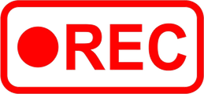
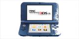
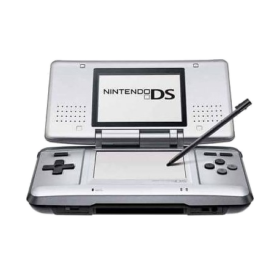

BARPIX REPAIRNintendo Specialist
Reparatur, Individualisierung und Capture-Card-Einbau.
Kostenloses, unverbindliches Angebot auf Anfrage.

Die Vorzeige-Mod von Barpix Repair. Integrieren Sie eine Capture Card direkt in Ihre Konsole, um zu streamen oder aufzunehmen.
Einbau eines internen Capture-Card-Kits. Profitieren Sie vom neuesten Kit auf dem Markt (Loopy 2024), um Ton und Bild per USB auf Ihren PC zu übertragen. Sauberes, stabiles Signal ohne Latenz im Spiel.

An die originale DS angepasster Einbau. Signal ebenfalls per USB übertragen. Ergebnis identisch zur 3DS und ermöglicht GBA- und DS-Spiele.

Die Capture Card ist eine elektronische Komponente, die im Inneren der Konsole verbaut wird, mit einem USB-Typ-C-Port, um Ihre Konsole mit dem PC zu verbinden. Sie greift das Videosignal ab, bevor es auf dem Bildschirm erscheint, und überträgt es per USB an Ihren PC. So können Sie auf Twitch oder YouTube streamen, Sessions aufnehmen oder Content erstellen — ganz ohne externe Box. Die Konsole wird über das USB-Kabel geladen, kein Ladegerät nötig. Die Software zum Aufnehmen des Streams ist 3DS Capture oder cc3dsfs, bevorzugt bei mehreren Konsolen.
Häufige Defekte, Diagnosen und Komponententausch. Einige Beispiele sehr häufiger Reparaturen. Diagnose unter 30 Minuten, kostenlos.
Austausch von Displays, Einbau modernerer Displays.
Austausch gebrochener/zerkratzter Teile durch Original- oder Nachbauteile. Frischer Look.
Austausch zu lockerer oder nicht mehr funktionierender Scharniere.
Austausch der Buchse bei wackeligem Laden oder beschädigtem Anschluss.
Reinigung oder Austausch eines defekten SD-Karten- / Spielmodul-Lesers.
Akkutausch bei stark reduzierter Laufzeit/Aufblähung oder bei ladebezogenen Komponenten.
Machen Sie Ihre Konsole einzigartig. Gehäuse, Tasten, Lackierung, Sticker, UV-Druck. ALLES IST MÖGLICH.
Große Auswahl an Ersatzgehäusen: transparent, farbig, thematisch. Saubere, sorgfältige Montage.
Austausch von ABXY-Tasten, Steuerkreuz und Triggern durch farbige oder individuelle Teile.
Maßgefertigte Vinyl-Sticker zur Personalisierung des Looks Ihrer Konsole ohne dauerhafte Veränderung.
Personalisieren Sie Ihre Konsole vollständig mit einem maßgeschneiderten Design und hochwertigem UV-Druck.
Alle Preise werden je nach Zustand Ihrer Konsole und Komplexität der Arbeit per Angebot festgelegt. Kontaktieren Sie mich für eine kostenlose Schätzung.
Kostenloses Angebot anfragen →